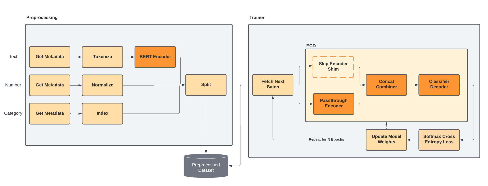

Fine-Tuning Pretrained Models
Fine-tuning is the process of taking a model previously trained one dataset, and adapting it to a more specialized dataset / task. Typically the original dataset is very large and very general (for example: a crawl of a large portion of the public Internet), and consequently the models are very large in order to reason about all this information (billions of parameters or more).
Libraries like HuggingFace's transformers provide acess to state-of-the-art pretrained models that can be used as input feature encoders in Ludwig, allowing you to take advantage of these large pretrained models and adapt them to solve your specific tasks, combining them with other domain-specific features like tabular metadata to create powerful multi-modal model architectures.
Ludwig's default configuration is designed to be fast and flexible, and as such, there are a few adjustments to the default configuration parameters we suggest making when fine-tuning a pretraine model. The sections below show examples of configurations we've found to give good results, along with the rationale behind each overridden parameter.
Suggested Configuration¶
The below partial configuration shows the "full fine-tuning configuration" including trainable weights, batch size set to maximize throughput, and learning rate warmup / decay:
defaults:
text:
encoder:
type: bert
trainable: true
trainer:
epochs: 5
batch_size: auto
learning_rate: 0.00001
learning_rate_scheduler:
warmup_fraction: 0.2
decay: linear
optimizer:
type: adamw
use_mixed_precision: true
compile: true
If you're looking to get the best performance you can out of the model, and are insensitive to training time, this is a good place to start. In the sections below, we'll also cover options that tradeoff some potential performance in favor of large speedups to the training throughput.
Feature Encoder and Preprocessing¶
Features Supporting Fine-Tuning¶
Text Encoders¶
type: text
encoder:
type: bert
use_pretrained: true
All of the HuggingFace encoders in Ludwig can be used for fine-tuning when
use_pretrained=true in the encoder config (default).
If there is a specific model you want to use, but don't see it listed, you can use the auto_transformer encoder in conjunction with
providing the model name in the pretrained_model_name_or_path parameter.
Image Encoders¶
type: image
encoder:
type: resnet
use_pretrained: true
All of the Torchvision pretrained models in Ludwig can be used
for fine-tuning when use_pretrained-true in the encoder config (default).
Trainable¶
encoder:
trainable: true
Ludwig currently supports two variations on fine-tuning, configured via the trainable encoder parameter:
- Modifying the weights of the pretrained encoder to adapt them to the downstream task (
trainable=true). - Keeping the pretrained encoder weights fixed and training a stack of dense layers that sit downstream as the combiner and decoder modules (
trainable=false, default). This is sometimes distinguished as transfer learning.
Allowing the weights to be modified by setting trainable=true can significantly improve performance on the downstream task,
but will take significantly longer to train (due to the additional backward passes over the pretrained model parameters).
Additionally, more care needs to be taken when selecting hyperparameters when trainable=true to prevent catastrophic forgettng, whereby the model forgets all of the valuable information it learned during pretraining.
We cover some useful techniques to help prevent this in the Trainer section below, but in summary:
- Select a low
learning_rate. - Use learning rate warmup by setting
warmup_fraction. - Use learning rate decay by setting
decay. - Limit the total number of training
epochsto 3 to 10.
Keeping the weights frozen will speed up training considerably, particularly when caching encoder embeddings (see below).
Cache Encoder Embeddings¶
name: sentence
type: text
encoder:
type: bert
trainable: false
preprocessing:
cache_encoder_embeddings: true
If you choose to set trainable=false to keep the weights fixed during fine-tuning, we highly recommend
setting cache_encoder_embeddings=true in the preprocessing section of the feature config, which moves the forward pass of the encoder
that generates text embeddings from tokenized inputs into the preprocessing portion of the Ludwig training workflow, removing this step
entirely from training. In practice, this can speed up training during fine-tuning by over 50x.

When the embeddings are cached in the preprocessed data, we replace the respective encoder in the ECD model at training time with a shim “Skip Encoder” that passes the input tensor data directly into the downstream combiner for concatenation with other input features. At prediction time and when exporting the model to TorchScript, the Skip Encoder is replaced with the original encoder and its pretrained weights.
While embedding caching is useful for a single model training run because it pays the cost of the forward pass on the large pretrained model for only a single epoch, it can be even more valuable in subsequent experiments. Because Ludwig caches preprocessed data and reuses it for new model training experiments (when preprocessing parameters are the same), any subsequent training runs for the same dataset will require no forward passes on the pretrained model whatsoever.
Trainer¶
Epochs¶
trainer:
epochs: 5
We recommend keeping the number of training epochs to between 3 and 10 when fine-tuning. If you set trainable=true,
we recommend setting it closer to 3 to 5 epochs. This is to
help prevent catastrophic forgetting from happening during the later epochs, as learning rate decay
will kick in too slowly when the prescribed number of epochs is too high.
Additionaly, training for the default 100 epochs could be prohibitively time consuming when training on a single GPU.
Batch Size¶
trainer:
batch_size: auto
We recommend keeping the default batch_size=auto to maximize GPU utilization during training. If a lower
batch size is selected, training will progress much slower and be more expensive, as GPU cycles will be wasted.
In practice, pretrained models tend to be less senstive to training with larger batch sizes than many smaller model architectures. However, if you experience issues with convergence when training with larger batch sizes, we recommend enabling ghost batch normalization in the combiner or decoder:
combiner:
type: concat
norm: ghost
Learning Rate¶
Base learning rate¶
trainer:
learning_rate: auto
Use a very small larning rate when fine-tuning to avoid catastrophic forgetting of all the pretrained model's previously learned knowledge.
- When
trainable=truewe recommend starting as low aslearning_rate=0.00001. - When
trainable=falsewe recommend starting withlearning_rate=0.00002.
Note that setting learning_rate=auto will automatically set the above defaults
on your behalf based on the selected model architecture.
Learning rate schedule¶
trainer:
epochs: 5
learning_rate_scheduler:
warmup_fraction: 0.2
decay: linear
It's important to both warmup the learning rate (particularly when using distributed training) and decay it to avoid catastrophic forgetting.
A warmup_fraction of 0.2 will result in 20% of the total training steps being spent
linearly scaling the learning rate up from 0 to the initial value provided in trainer.learning_rate. This
is useful as otherwise the learning process may over-correct the weights of the pretrained model
in the early stages of training.
Using linear decay is a very aggressive decay strategy that linearly reduces the
learning rate down to 0 as training approaches the final epoch. The decay will only start
after the learning rate warmup period has finished and the learning rate is set to its initial
value.
Both warmup and decay are affected by the total epochs set in the trainer config, so it's important to make
sure the epochs are set to a sufficiently low value for the warmup and decay to be effective. If epochs is left at
the default value of 100, then too much time will be spent in warmup and the decay will not be noticeable.
Learning rate scaling¶
trainer:
learning_rate_scaling: sqrt
The base trainer.learning_rate will be scaled up as the number of training workers increases for distributed training. By
default the learning rate will scale linearly (linear), but this can be relaxed if you notice catastrophic forgetting is
occurring, in which case a softer learning_rate_scaling=sqrt setting may be worth considering.
Optimizer¶
trainer:
optimizer:
type: adamw
We recommend using adamw as the optimizer for fine-tuning.
AdamW is typically recommended over more traditional optimizers such as SGD or Adam due to its improved handling of weight decay, which is of particular importance during fine-tuning to avoid catastrophic forgetting.
Mixed Precision¶
trainer:
use_mixed_precision: true
It's highly recommended to set use_mixed_precision=true when fine-tuning. Empirically, it can speedup training by
about 2.5x witout loss of model quality.
Model Compilation¶
trainer:
compile: true
For users using PyTorch v2.0 and above, you can take advantage of the new model compilation features to speed up training by upwards of 20%. Model compilation is particularly impactful when used in conjunction with with mixed precision training.
Backend¶
Fine-tuning large pretrained models typically benefit from distributed training without requiring a lot of additional hyperparameter tuning. As such, we recommend using the Ray backend in order to take advantage of multi-GPU training and to scale to large datasets.
In most cases, theddp or horovod distributed strategy will work well, but if the
model is too large for your GPU type, then you should try the deepspeed strategy, which allows for sharding model parameters
across multiple GPUs.